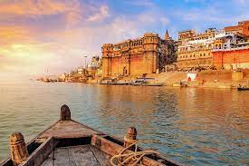
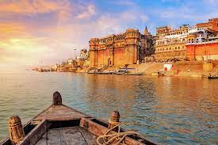
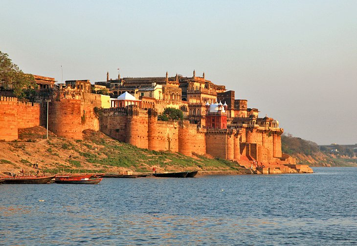
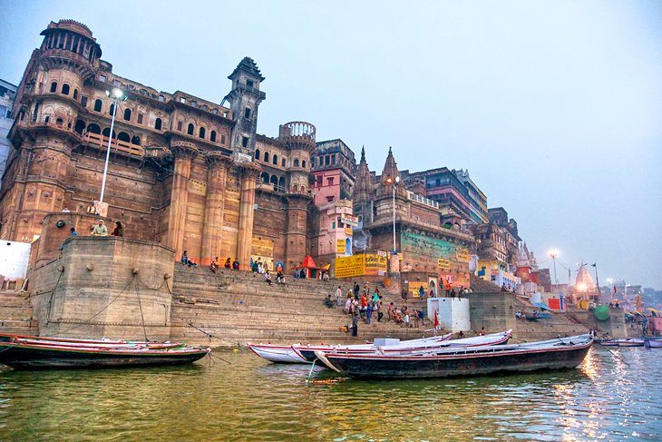

Tour duration- 5 nights and 6 days
DATES - From 11th October to 16th october,2021
Your journey date will be told as per your booking address
| Visiting Place | Description | DATE |
|---|---|---|
 Dasaswamedh Ghat |
The lively atmosphere of the Dasaswamedh Ghat makes it one of the best places to visit in Varanasi. This tourist attraction is a swirling hodgepodge of flower sellers touting bright blossoms, boat operators hawking rides along the Ganges River, and sadhus (holy men) with face paint. You can spend hours people watching in this area during the day.
Hindu priests put on the Ganga Aarti every night at the Dasaswamedh Ghat, starting at around 7pm. Donning saffron-hued robes, the priests spread out plates of flower petals and other offerings and blow a conch shell to signal the start of the spiritual ceremony. Thousands of tourists gather to watch the priests chant and wave tiered plates of sandalwood-scented incense in intricate patterns for about 45 minutes. It's an extravagant sight that you won't want to miss. Hot tip: Get to the ghat at least a couple of hours early if you want to beat the crowds and score a great spot for the show. You can also get incredible views from boats along the river or in shop balconies above the ghat. |
11TH OCTOBER,2021 |
 Manikarnika Ghat |
Plumes of smoke swirl toward the sky at Manikarnika Ghat. No, it's not from a factory — it's from the perpetual cremations that happen on this ghat. Hindus believe that Manikarnika Ghat is one of the most auspicious places for the departed to reach moksha (emancipation from the cycle of spiritual rebirth). The funeral pyre at this ghat burns 24/7, and around 100 cremations take place every day.
Priests or guides frequently offer to lead tourists through the fascinating ghat, however some can be aggressive in their demands for money. You may see doms (members of an untouchable caste) carrying cloth-wrapped bodies on makeshift stretchers, along with piles of firewood stacked up, ready to feed the pyre.
You may also be offered the chance to see a cremation up close — for a fee, of course. While profound, the experience is not for the faint of heart, nor is it a tourist attraction in the traditional sense. Know your limits, be respectful, and avoid taking photos of the funerals, mourners, and the departed. Hot tip: If you're interested in the ritualistic cremations, but can't stomach the idea of seeing them up close, consider passing by Manikarnika Ghat on a boat tour along the Ganges River. The distance dampens the effect while still giving tourists a sense of what's happening in this important place. |
11TH OCTOBER,2021 |
 Shri Kashi Vishwanath Temple |
Hindu pilgrims and tourists alike travel for thousands of miles to reach the Shri Kashi Vishwanath Temple, a sacred attraction around four kilometers from the Varanasi Junction railway station near the Manikarnika Ghat. The impressive structure, dedicated to the Hindu deity Shiva, has earned the nickname "The Golden Temple" for its striking spire — plated in some 800 kilograms of pure gold. The distinctive design of this temple has gone on to inspire the architecture of hundreds of other temples across India. Strict security measures around the complex require that tourists stash their cameras, phones, bags, and other belongings in a rentable locker nearby. Expect to ditch your shoes and wait in line with hundreds of other visitors, all eager to touch the 60-centimeter-tall, sin-absolving Shiva lingam in a silver alter. It's an intense, yet rewarding experience. | 12TH OCTOBER,2021 |
|  Ramnagar Fort |
There are few destinations in India without a fort, and Varanasi is no exception. About 14 kilometers from the city center, you'll find Ramnagar Fort. The 18th-century sandstone fort and palace is no longer used as a defensive structure, but instead houses a quirky museum brimming with vintage automobiles, elaborate hookahs, antique weapons, sedan chairs decked out in jewels, and a one-of-a-kind astronomical clock that's more than 150 years old. After enjoying an archeological treasure hunt at the museum, check out the fort's temples, one of which honors Veda Vyasa, author of the Mahabharata and other important Hindu epics. | 13TH OCTOBER,2021 |
|  Darbhanga Ghat |
Photographers, take note: Darbhanga Ghat offers the best opportunity to get amazing shots of Varanasi. The stairs leading down to the riverbank are crowned by the ultra-luxurious BrijRama Palace, an old fort that has since been converted into a heritage hotel. The property's Greek pillars and rounded balconies give the area (and your photographs) a regal backdrop. Plan to get here around dawn to capture unobstructed views of the incredible sunrise over the horizon of the Ganges River. | 15TH OCTOBER,2021 |
| Back to home |
| Go to contents |
| About us |
| Back to Kashmir |
| Next- Puri |
| Vizag |
| Hyderabad |
| Booking For Tour |
| Contact us |